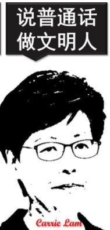

I have been trying to combine Spanish "alegría" (zest for life) with American belief in freedom, as well as Greek "eudaimonism", and Swiss efficiency. Hong Kong added the beauty of a multicultural society. And in my heart, I have always been Chinese.
One cultural shock I had.
Let's compare these typical greetings in different languages.There is no absolute standard for greetings. Different greetings show different characteristics of so many lovely people. But how to maintain this diversity and culture behind using CS techniques, I have always been thinking about it. No answer now. Using VR, or others?
